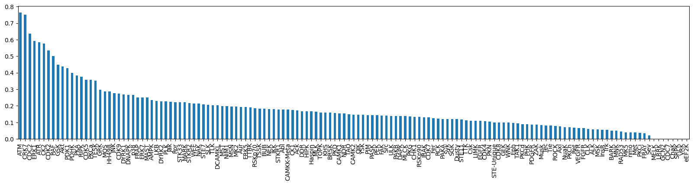
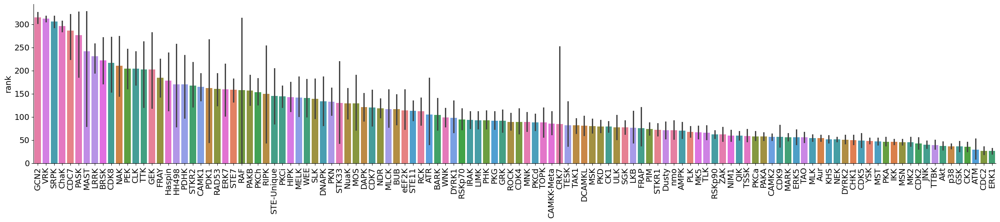

from katlas.core import *
import pandas as pdScoring evaluation
LO = pd.read_parquet('out/CDDM_pssms_LO_eval.parquet')
LO_upper = pd.read_parquet('out/CDDM_pssms_LO_eval_upper.parquet')Log-odds + sum
predict_kinase("PSVEPPLsQETFSDL",ref = LO,func=sumup)considering string: ['-7P', '-6S', '-5V', '-4E', '-3P', '-2P', '-1L', '0s', '1Q', '2E', '3T', '4F', '5S', '6D', '7L']index
Q13535_ATR 11.215
Q13315_ATM 10.362
P78527_DNAPK 6.586
O96017_CHK2 2.101
P49840_GSK3A 1.719
...
Q6P2M8_CAMK1B -90.700
O00311_CDC7 -90.895
Q9NYV4_CDK12 -107.828
P15056_BRAF -135.335
Q59H18_TNNI3K -139.231
Length: 333, dtype: float64# upper
predict_kinase("PSVEPPLsQETFSDL",ref = LO_upper,func=sumup)considering string: ['-7P', '-6S', '-5V', '-4E', '-3P', '-2P', '-1L', '0s', '1Q', '2E', '3T', '4F', '5S', '6D', '7L']index
Q13535_ATR 10.045
Q13315_ATM 8.797
P78527_DNAPK 5.814
O96017_CHK2 3.416
P49761_CLK3 2.908
...
O75385_ULK1 -67.640
Q9NYV4_CDK12 -67.855
Q6P2M8_CAMK1B -73.139
Q59H18_TNNI3K -97.097
P15056_BRAF -114.566
Length: 333, dtype: float64predict_kinase("PSVEPPLsQETFSDL",ref = ref,func=sumup)considering string: ['-7P', '-6S', '-5V', '-4E', '-3P', '-2P', '-1L', '0s', '1Q', '2E', '3T', '4F', '5S', '6D', '7L']index
Q13535_ATR 11.214
Q13315_ATM 10.362
P78527_DNAPK 6.586
O96017_CHK2 2.101
P49840_GSK3A 1.718
...
Q6P2M8_CAMK1B -90.701
O00311_CDC7 -90.896
Q9NYV4_CDK12 -107.828
P15056_BRAF -135.335
Q59H18_TNNI3K -139.231
Length: 333, dtype: float64predict_kinase("PSVEPPLSQETFSDL",ref = ref,func=sumup)considering string: ['-7P', '-6S', '-5V', '-4E', '-3P', '-2P', '-1L', '0S', '1Q', '2E', '3T', '4F', '5S', '6D', '7L']index
Q13535_ATR 11.214
Q13315_ATM 10.362
P78527_DNAPK 6.586
O96017_CHK2 2.101
P49840_GSK3A 1.718
...
Q6P2M8_CAMK1B -90.701
O00311_CDC7 -90.896
Q9NYV4_CDK12 -107.828
P15056_BRAF -135.335
Q59H18_TNNI3K -139.231
Length: 333, dtype: float64predict_kinase("AFEEKRYREMRRKNIIGQVCDsPKSyDNVMHVGLRKVTFKWQA",ref = ref,func=sumup)considering string: ['-20F', '-19E', '-18E', '-17K', '-16R', '-15Y', '-14R', '-13E', '-12M', '-11R', '-10R', '-9K', '-8N', '-7I', '-6I', '-5G', '-4Q', '-3V', '-2C', '-1D', '0s', '1P', '2K', '3S', '4y', '5D', '6N', '7V', '8M', '9H', '10V', '11G', '12L', '13R', '14K', '15V', '16T', '17F', '18K', '19W', '20Q']index
P05129_PKCG 2.485
P05771-2_PKCB 1.566
Q13164_ERK5 1.337
Q13233_MEKK1 0.626
O00506_YSK1 0.495
...
Q01974_ROR2 -250.551
Q99640_PKMYT1 -261.428
P19525_PKR -283.355
Q99986_VRK1 -287.525
Q9NYV4_CDK12 -412.807
Length: 333, dtype: float64Evaluate on test set
data=pd.read_parquet('out/CDDM_test_set.parquet')out = predict_kinase_df(data,seq_col='site_seq',ref=ref,func=sumup)input dataframe has a length 18461
Preprocessing
Finish preprocessing
Merging reference
Finish mergingdata| kin_sub_site | substrate_uniprot | site | source | substrate_genes | substrate_phosphoseq | position | site_seq | sub_site | substrate_sequence | ... | kinase_family | kinase_subfamily | kinase_pspa_big | kinase_pspa_small | kinase_coral_ID | num_kin | kinase_id | source_len | kinase_uniprot | rank | |
|---|---|---|---|---|---|---|---|---|---|---|---|---|---|---|---|---|---|---|---|---|---|
| index | |||||||||||||||||||||
| 154 | O00141_P43243_S188 | P43243 | S188 | Sugiyama | MATR3 KIAA0723 | MsKsFQQssLsRDsQGHGRDLsAAGIGLLAAAtQsLsMPAsLGRMN... | 188 | EPPyRVPRDDWEEKRHFRRDsFDDRGPsLNPVLDyDHGsRs | P43243_S188 | MSKSFQQSSLSRDSQGHGRDLSAAGIGLLAAATQSLSMPASLGRMN... | ... | SGK | SGK | Basophilic | Akt/rock | SGK1 | 106 | O00141_SGK1 | 1 | O00141 | 248 |
| 370 | O00141_Q9UN36_T330 | Q9UN36 | T330 | GPS6|SIGNOR|ELM|EPSD|PSP | NDRG2 KIAA1248 SYLD | MAELQEVQITEEKPLLPGQTPEAAKEAELAARILLDQGQTHSVETP... | 330 | FLQGMGYMASSCMTRLsRsRtAsLtsAAsVDGNRsRsRtLs | Q9UN36_T330 | MAELQEVQITEEKPLLPGQTPEAAKEAELAARILLDQGQTHSVETP... | ... | SGK | SGK | Basophilic | Akt/rock | SGK1 | 2 | O00141_SGK1 | 5 | O00141 | 38 |
| 299 | O00141_Q92597_T356 | Q92597 | T356 | GPS6|SIGNOR|ELM|EPSD|PSP | NDRG1 CAP43 DRG1 RTP | MsREMQDVDLAEVKPLVEKGETITGLLQEFDVQEQDIETLHGSVHV... | 356 | sLDGtRsRsHtSEGTRsRsHtsEGtRsRsHtsEGAHLDItP | Q92597_T356 | MSREMQDVDLAEVKPLVEKGETITGLLQEFDVQEQDIETLHGSVHV... | ... | SGK | SGK | Basophilic | Akt/rock | SGK1 | 2 | O00141_SGK1 | 5 | O00141 | 10 |
| 251 | O00141_Q15149_S4386 | Q15149 | S4386 | Sugiyama | PLEC PLEC1 | MVAGMLMPRDQLRAIYEVLFREGVMVAKKDRRPRSLHPHVPGVTNL... | 4386 | ItEFADMLsGNAGGFRsRsssVGssssyPIsPAVsRtQLAs | Q15149_S4386 | MVAGMLMPRDQLRAIYEVLFREGVMVAKKDRRPRSLHPHVPGVTNL... | ... | SGK | SGK | Basophilic | Akt/rock | SGK1 | 8 | O00141_SGK1 | 1 | O00141 | 13 |
| 58 | O00141_P00338_T322 | P00338 | T322 | Sugiyama | LDHA PIG19 | MAtLKDQLIyNLLKEEQtPQNKITVVGVGAVGMACAISILMKDLAD... | 322 | DLVKVTLtsEEEARLKKsADtLWGIQKELQF__________ | P00338_T322 | MATLKDQLIYNLLKEEQTPQNKITVVGVGAVGMACAISILMKDLAD... | ... | SGK | SGK | Basophilic | Akt/rock | SGK1 | 52 | O00141_SGK1 | 1 | O00141 | 37 |
| ... | ... | ... | ... | ... | ... | ... | ... | ... | ... | ... | ... | ... | ... | ... | ... | ... | ... | ... | ... | ... | ... |
| 186963 | Q9Y6M4_P68133_S62 | P68133 | S62 | Sugiyama | ACTA1 ACTA | MCDEDETTALVCDNGSGLVKAGFAGDDAPRAVFPsIVGRPRHQGVM... | 62 | HQGVMVGMGQKDsyVGDEAQsKRGILTLKyPIEHGIItNWD | P68133_S62 | MCDEDETTALVCDNGSGLVKAGFAGDDAPRAVFPSIVGRPRHQGVM... | ... | CK1 | CK1 | Acidophilic | Ck1 | CK1g3 | 56 | Q9Y6M4_CSNK1G3 | 1 | Q9Y6M4 | 8 |
| 186857 | Q9Y6M4_P04406_S241 | P04406 | S241 | Sugiyama | GAPDH GAPD CDABP0047 OK/SW-cl.12 | MGKVKVGVNGFGRIGRLVtRAAFNsGKVDIVAINDPFIDLNyMVYM... | 241 | IPELNGKLtGMAFRVPtANVsVVDLtCRLEKPAKyDDIKKV | P04406_S241 | MGKVKVGVNGFGRIGRLVTRAAFNSGKVDIVAINDPFIDLNYMVYM... | ... | CK1 | CK1 | Acidophilic | Ck1 | CK1g3 | 150 | Q9Y6M4_CSNK1G3 | 1 | Q9Y6M4 | 254 |
| 186892 | Q9Y6M4_P14625_S106 | P14625 | S106 | Sugiyama | HSP90B1 GRP94 HSPC4 TRA1 | MRALWVLGLCCVLLTFGSVRADDEVDVDGTVEEDLGKSREGsRtDD... | 106 | MKLIINSLYKNKEIFLRELIsNAsDALDKIRLISLTDENAL | P14625_S106 | MRALWVLGLCCVLLTFGSVRADDEVDVDGTVEEDLGKSREGSRTDD... | ... | CK1 | CK1 | Acidophilic | Ck1 | CK1g3 | 66 | Q9Y6M4_CSNK1G3 | 1 | Q9Y6M4 | 129 |
| 186908 | Q9Y6M4_P29692_S162 | P29692 | S162 | Sugiyama | EEF1D EF1D | MATNFLAHEKIWFDKFKYDDAERRFyEQMNGPVAGAsRQENGAsVI... | 162 | AKKPAtPAEDDEDDDIDLFGsDNEEEDKEAAQLREERLRQY | P29692_S162 | MATNFLAHEKIWFDKFKYDDAERRFYEQMNGPVAGASRQENGASVI... | ... | CK1 | CK1 | Acidophilic | Ck1 | CK1g3 | 56 | Q9Y6M4_CSNK1G3 | 1 | Q9Y6M4 | 148 |
| 186929 | Q9Y6M4_P60174_S212 | P60174 | S212 | Sugiyama | TPI1 TPI | MAPSRKFFVGGNWKMNGRKQsLGELIGtLNAAKVPADtEVVCAPPt... | 212 | WLKsNVsDAVAQstRIIyGGsVtGAtCKELASQPDVDGFLV | P60174_S212 | MAPSRKFFVGGNWKMNGRKQSLGELIGTLNAAKVPADTEVVCAPPT... | ... | CK1 | CK1 | Acidophilic | Ck1 | CK1g3 | 143 | Q9Y6M4_CSNK1G3 | 1 | Q9Y6M4 | 271 |
18461 rows × 23 columns
out.columnsIndex(['P12931_SRC', 'P29320_EPHA3', 'P07332_FES', 'Q16288_NTRK3',
'Q9UM73_ALK', 'P00519_ABL1', 'P36888_FLT3', 'P29322_EPHA8',
'P29323_EPHB2', 'P54762_EPHB1',
...
'P35626_GRK3', 'Q99640_PKMYT1', 'Q6P2M8_PNCK', 'O00311_CDC7',
'Q9NYV4_CDK12', 'Q15746_MYLK', 'Q01973_ROR1', 'O14976_GAK',
'P15056_BRAF', 'Q6P0Q8_MAST2'],
dtype='object', length=335)def get_kinase_rank(row_index):
kinase = data.loc[row_index, 'kinase_id']
scores = out.loc[row_index]
ranked = scores.sort_values(ascending=False)
rank = ranked.index.get_loc(kinase) + 1 # +1 to make rank start from 1
return rankdata['rank'] = out.index.to_series().apply(get_kinase_rank)Top 5/10
def top_k_accuracy(reference_df, result_df, k):
def is_in_top_k(row_index):
kinase = reference_df.loc[row_index, 'kinase_id']
scores = result_df.loc[row_index]
top_k = scores.nlargest(k).index
return kinase in top_k
return result_df.index.to_series().apply(is_in_top_k).mean()top1 = top_k_accuracy(data, out, 1)
top5 = top_k_accuracy(data, out, 5)
top10 = top_k_accuracy(data, out, 10)print(f"Top-1 accuracy: {top1:.3f}")
print(f"Top-5 accuracy: {top5:.3f}")
print(f"Top-10 accuracy: {top10:.3f}")Top-1 accuracy: 0.017
Top-5 accuracy: 0.087
Top-10 accuracy: 0.161Groupby kinase subfamily
reference_df =data.copy()result_df = out.copy()def top_k_accuracy_group(group_indices, k):
def is_correct(row_index):
kinase = reference_df.loc[row_index, 'kinase_id']
scores = result_df.loc[row_index]
top_k = scores.nlargest(k).index
return kinase in top_k
return pd.Series(group_indices).apply(is_correct).mean()# Group indices by subfamily
grouped = data.groupby('kinase_subfamily').groups # dict: subfamily → list of indices
# Compute accuracy per subfamily
topk_scores = {
subfam: top_k_accuracy_group(indices, k=10)
for subfam, indices in grouped.items()
}
# Convert to DataFrame for easy viewing
topk_df = pd.DataFrame.from_dict(topk_scores, orient='index', columns=['topk_accuracy']).sort_values('topk_accuracy', ascending=False)topk_df['topk_accuracy']ATM 0.764706
CRK7 0.750000
CDC2 0.637097
ERK1 0.591837
ATR 0.583333
...
CDC7 0.000000
ChaK 0.000000
SRPK 0.000000
VRK 0.000000
eEF2K 0.000000
Name: topk_accuracy, Length: 143, dtype: float64topk_df['topk_accuracy'].plot.bar(figsize=(20,4))
# TODO: add hue
By kinase group?
Bar plot of rank across kinase group
data.columnsIndex(['kin_sub_site', 'substrate_uniprot', 'site', 'source',
'substrate_genes', 'substrate_phosphoseq', 'position', 'site_seq',
'sub_site', 'substrate_sequence', 'kinase_on_tree', 'kinase_genes',
'kinase_group', 'kinase_family', 'kinase_subfamily', 'kinase_pspa_big',
'kinase_pspa_small', 'kinase_coral_ID', 'num_kin', 'kinase_id',
'source_len', 'kinase_uniprot', 'rank'],
dtype='object')plot_bar(data,value='rank',group='kinase_subfamily',dots=False,figsize = (30,5))
plot_bar(data[data.kinase_group=='TK'],value='rank',group='kinase_subfamily',dots=False,figsize = (30,5))
plot_bar(data[data.kinase_group!='TK'],value='rank',group='kinase_subfamily',dots=False,figsize = (30,5))
AUCDF
from katlas.plot import *get_AUCDF(data,'rank')
np.float64(0.8289094824229805)data_tk = data[data.kinase_group=='TK']
data_st = data[data.kinase_group!='TK']get_AUCDF(data_tk,'rank')
get_AUCDF(data_st,'rank')

np.float64(0.7998083324521585)data['rank'].hist(bins=50)